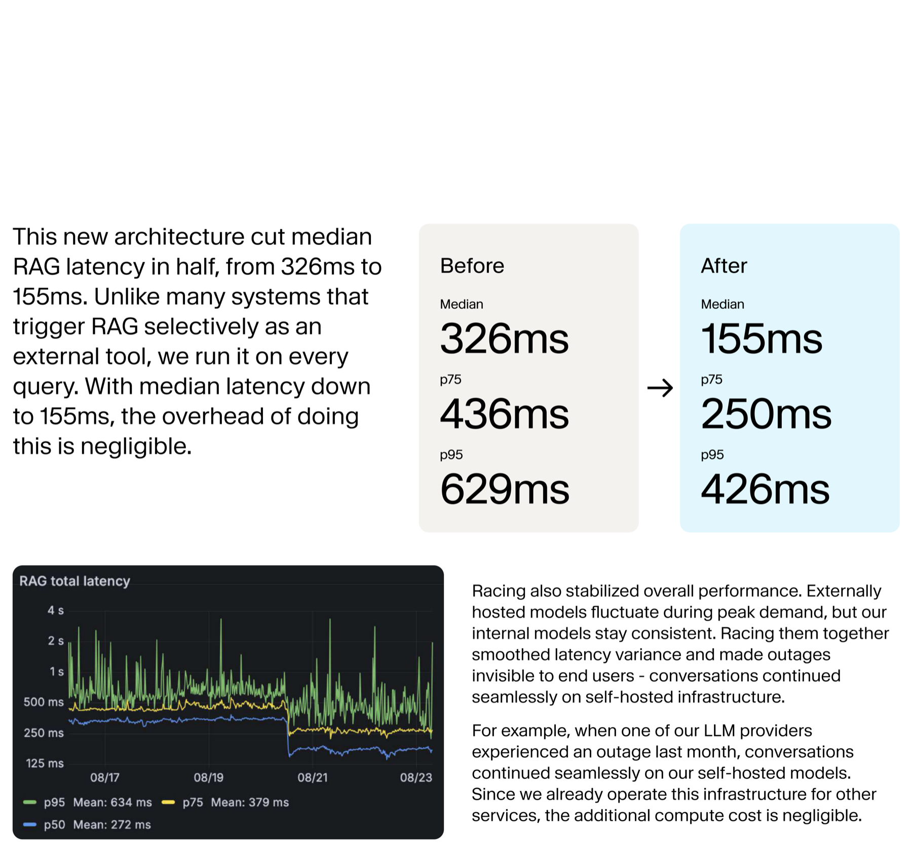

Evidence boundary
This is a vendor case study, not a controlled benchmark
The supplied document is a concise engineering brief by ElevenLabs software engineer Michal Korbela. It explains the bottleneck, architecture change, latency percentiles, and an outage anecdote. It does not disclose sample size, traffic mix, regions, hardware, evaluation window, rewrite-quality metrics, or statistical uncertainty.
The reported numbers are still useful as a production pattern, but they establish what happened in ElevenLabs' system rather than proving that every RAG application will see the same gain.
The post-change median is 155ms. The p75 is 250ms and p95 is 426ms, so the headline does not describe every request.
Executive summary
The optimization was architectural, not a faster prompt
ElevenLabs runs retrieval on every conversational turn. Before searching, an LLM rewrites the user's latest message and dialogue history into a self-contained query. This improves retrieval and creates an auditable representation of what the system searched for, but it also inserts another networked model call into the critical path.
In the original design, one externally hosted LLM performed that rewrite. Provider latency, regional throughput limits, and outages therefore governed the whole RAG pipeline. According to the brief, this single step accounted for 80% of total RAG latency.
The fix was to dispatch the same rewrite request to multiple models simultaneously, including colocated self-hosted Qwen 3-4B and Qwen 3-30B-A3B variants. The first completion that passes validation wins. If none responds within one second, retrieval proceeds with the raw user message instead.
- Median RAG latency fell from 326ms to 155ms.
- p75 fell from 436ms to 250ms.
- p95 fell from 629ms to 426ms.
- The same design reduced dependence on one provider and allowed conversations to continue during an external outage.
The hidden bottleneck
Conversational retrieval needs a self-contained query
A user rarely repeats all relevant context. A message such as “Can we customize those limits based on our peak traffic patterns?” only makes sense when the earlier conversation has already established that “those limits” means Enterprise-plan API rate limits.
The rewrite stage turns that dependent turn into an explicit retrieval query: can Enterprise-plan API rate limits be customized for specific traffic patterns? This can improve document matching and produce a useful audit trail, especially in regulated support workflows. Yet the rewrite is still a serial dependency: RAG cannot begin until it finishes.
Optimize the dominant stage, not the most fashionable one. Here, vector retrieval was not the problem; the context-rewriting LLM in front of it was.
Model racing
Turn one blocking dependency into a race
The new pipeline sends each rewrite request to an external model and two self-hosted models at the same time. If their latencies are not perfectly correlated, the winner is usually faster and less variable than any one candidate.
In practice, the expression is “first valid completion,” not merely first bytes. The validity gate must reject empty, malformed, unrelated, or policy-violating rewrites. A weak gate converts a latency optimization into a retrieval-quality bug.
Graceful degradation
The one-second fallback chooses availability over precision
If every rewrite model misses the deadline, ElevenLabs uses the user's raw message. The conversation continues instead of stalling, but retrieval may lose context and return less relevant documents. That is a deliberate product policy, not a free reliability win.
What improves
Bounded waiting time, provider independence, better regional stability, and continued service during model outages.
What can degrade
Coreference resolution, retrieval recall, answer grounding, and auditability when the raw turn lacks prior context.
Production systems should record this fallback as an explicit mode. It should be visible in traces and quality dashboards so availability gains do not quietly hide a rise in wrong answers.
Measured outcome
Every reported percentile improved, but the tail remains
| Metric | Before | After | Saved |
|---|---|---|---|
| Median | 326ms | 155ms | 171ms |
| p75 | 436ms | 250ms | 186ms |
| p95 | 629ms | 426ms | 203ms |
The absolute saving grows toward the tail, while the relative improvement shrinks. This suggests the race removed a large rewrite penalty but did not eliminate every source of tail latency across the complete RAG path.

Beyond latency
Racing is also a reliability pattern
An external provider can slow down at peak demand, impose regional throughput limits, or become unavailable. Colocated self-hosted models give the system independent paths with more predictable network latency. ElevenLabs reports that when one LLM provider failed, conversations continued on its internal models.
This is closely related to hedged requests in distributed systems: duplicate work can reduce tail latency and mask isolated failures. The benefit is strongest when candidates fail independently. It is weaker when every model shares the same upstream dependency, region, or capacity bottleneck.
Trade-offs
The fastest answer may require more total work
Parallel inference spends capacity on candidates whose output is discarded. ElevenLabs says the additional compute cost is negligible because it already operates this infrastructure for other services. That conclusion is specific to its deployment, not a general property of model racing.
- Load amplification: one user turn can create three inference requests instead of one.
- Wasted compute: losing generations may continue unless the runtime supports prompt cancellation.
- Fast-model bias: the quickest valid model wins more traffic, so subtle quality differences can become systemic.
- Model drift: provider or self-hosted upgrades can change rewrite style, retrieval behavior, and fallback rate.
- Operational burden: self-hosting adds capacity planning, observability, deployment, security, and incident work.
Production playbook
How to test this pattern without losing retrieval quality
- Profile the full path. Confirm that rewriting, not embedding, vector search, reranking, or answer generation, dominates the latency budget.
- Build a rewrite evaluation set. Include pronouns, follow-up questions, negation, topic changes, long history, and domain-specific entities.
- Define “valid” structurally and semantically. Check schema, length, required entities, language, policy, and obvious divergence from the latest user intent.
- Measure downstream outcomes. Compare retrieval recall, grounded-answer quality, citation accuracy, and task success for each rewrite model and the raw-query fallback.
- Set a budgeted deadline. Derive the fallback threshold from the end-to-end voice or chat SLA rather than copying one second blindly.
- Trace every winner and loser. Record model, latency, validity result, cancellation, fallback reason, region, and downstream retrieval score.
- Canary model changes. Pin versions and rerun quality plus latency evals before changing the candidate pool.
Full parallel racing is not the only design. A system can start its preferred model, then launch a backup after a short hedge delay when the first request is unusually slow. This trades a little latency for lower duplicate compute.
Where it fits
Use model racing when latency and independence justify it
| Good fit | Poor fit |
|---|---|
| Rewrite is the dominant latency stage | Retrieval or generation dominates instead |
| Several models meet the quality bar | Only one model is sufficiently accurate |
| Strict conversational latency SLA | Batch or asynchronous workflow |
| Independent provider and self-hosted paths | All candidates share the same failure domain |
| Fallback errors are detectable and recoverable | A degraded rewrite can cause irreversible harm |
Verdict
A strong pattern with an incomplete quality story
The case study's most valuable idea is not “use Qwen” or “run more GPUs.” It is to remove a fragile serial dependency by combining speculative execution, independent infrastructure, a validity gate, and graceful degradation. That design directly addresses both median latency and provider failure.
The evidence is persuasive on latency within this deployment, but incomplete on quality and cost. A production team should reproduce the result against its own conversations, retrieval corpus, error costs, and compute budget. The system wins only when the first answer is fast and good enough to retrieve the right evidence.
Source and method
What this summary is based on
- Michal Korbela, ElevenLabs, “How we cut RAG latency in half for enterprise-scale conversational systems.” The complete supplied six-page PDF was reviewed visually, including both diagrams and all reported percentile values.
- Percent reductions and absolute gains were independently recomputed from the before-and-after values printed in the PDF.
- Architecture interpretation and the production checklist are clearly separated from the vendor's reported results.